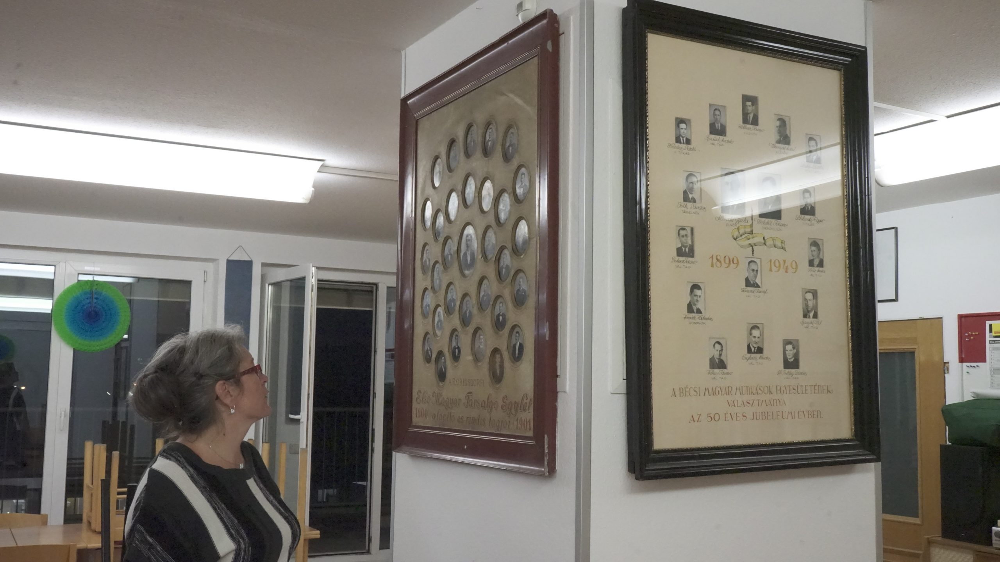
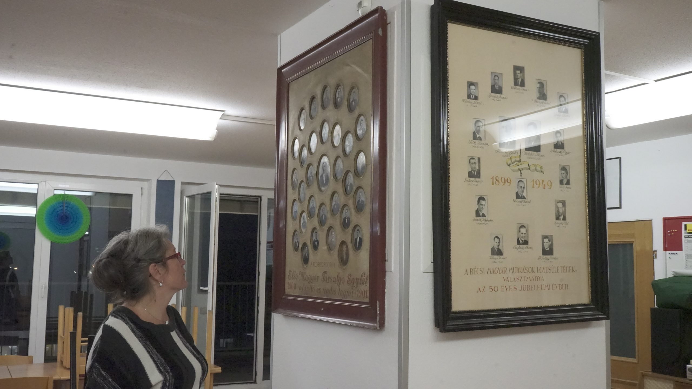

Bécsi Magyar Munkás Egyesület (BMME)
Üdvözöljük a Bécsi Magyar Munkás Egyesület (BMME) honlapján! Ausztria egyik legrégebbi magyar egyesületeként 1899 óta szolgáljuk a bécsi magyar közösséget. 2019-ben ünnepeltük 120. évfordulónkat, és azóta is hűek maradtunk küldetésünkhöz: a magyar nyelv, kultúra és hagyományok ápolásához. Jelenleg mintegy 300 aktív tagunk van, akik Kancsár Erika és Kancsár László vezetésével havi rendszerességgel 80-90 baráttal találkoznak székházunkban, a Hirschstettnerstrasse 19-ben. Itt, a "magyar házban" otthonra lelhet minden dolgozó ember, aki kikapcsolódásra vágyik, és a magyar virtust szeretné átélni.

 



Rólunk
A BMME több mint egy egyesület – egy valódi közösség, ahol a magyar hagyományok és a barátság találkoznak. Székházunk rendezvényterme ideális helyszín 80-90 fős összejövetelekhez, és rendszerint teltházas eseményeket tartunk. Erika és László, valamint egy 6-7 fős csapat fáradhatatlanul dolgozik, hogy minden találkozó felejthetetlen legyen. Legyen szó gulyásfőző versenyről – ahol a Szolnoki Gulyásfesztiválon harmadik helyet értünk el – vagy egy nagyszabású Gulaschfestivalról a Donauparkban, nálunk a gasztronómia és a zene mindig kéz a kézben jár. “Azért csináljuk, mert szeretjük” – vallja Kancsár László, és ez az elhivatottság tartja életben a BMME szellemét.
Csatlakozzon hozzánk!Események
2025-ben is izgalmas programokkal várjuk barátainkat! A részvétel tagoknak 35 €, nem tagoknak 40 €, ami egy négyfogásos vacsorát és egy üdvözlő italt foglal magában. Jegyeinket érdemes időben lefoglalni, mert gyorsan elfogynak!
Gulaschfestival Wien 2025 – Donaupark
A Gulaschfestival Wien ötvözi az osztrák-magyar hagyományokat, a bécsi meghittséget és a fűszeres kulináris párbajt. 25 csapat Ausztriából, Magyarországról és Vajdaságból méri össze tudását, hogy elkészítse az év legjobb bográcsgulyását. A zsűri – szakértőkből és laikusokból egyaránt – választja ki a győztest, a vándorserleget pedig a tavalyi bajnok védi meg vagy adja át az új nyertesnek. A legjobb három gulyás szimbolikus díjakat kap. A Donauparkban megrendezett esemény várhatóan 5000 látogatót vonz, és színes programmal várja a családokat: népzenei együttesek Magyarországról, Ausztriából és a szomszédos országokból, valamint szórakoztató zene 21 óráig. A csapatok délelőtt kezdik az előkészületeket, a program 13:00-kor indul, a győztest pedig 16:00 körül hirdetik ki. További részletek: gulaschfestival.com.
Disznótoros Vacsora – 2025. november 25.
November 25-én egy hatalmas disznótoros vacsorával várjuk vendégeinket székházunkban. A Péterrévei Tisza Tambura Zenekar szolgáltatja a hangulatot, miközben igazi magyaros ízeket kóstolhatunk meg. Jelentkezni Kancsár Lászlónál lehet november 20-ig a +43 699 1909 2536 telefonszámon.
További 2025-ös programjaink hamarosan!
Galéria
Tekintse meg képeinket korábbi rendezvényeinkről, ahol a magyar virtus és a közösségi öröm mindig főszerepet kapott!